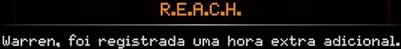
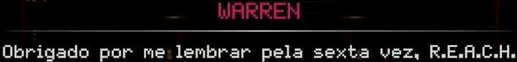
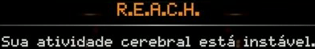
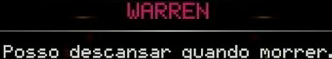
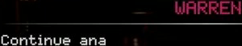

R.E.A.C.H. Warren, foi registrada uma hora extra adicional.

R.E.A.C.H. Warren, foi registrada uma hora extra adicional.

WARREN Obrigado por me:lembrar pela sexta vez, R.E.A.C.H.

R.E.A.C.H. Sua atividade cerebral estáinstável.

WARREN Posso descansar quando morrer.

WARREN Continue ana
